,i=1,2,\ldots n") -- ここで、xは独立変数、yは従属変数、
-- ここで、xは独立変数、yは従属変数、 と
と はパラメータ、
はパラメータ、与えたられたデータセット -- ここで、xは独立変数、yは従属変数、とはパラメータ、
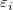
は平均値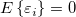
と変数 のときの誤差項です。--- 線形回帰は、以下の式のモデルに、データを合わせます。
のときの誤差項です。--- 線形回帰は、以下の式のモデルに、データを合わせます。
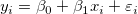 |
(1) |
|---|
最小二乗推定を使って、n偏差平方和を最小化します。
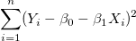 |
(2) |
|---|
線形モデルの推定パラメータは、次の式で計算できます。
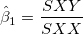 |
(3) |
|---|
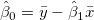 |
(4) |
|---|
ここで、
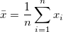 ,
|
(5) |
|---|
および、
 (補正) (補正)
|
(6) |
|---|
(y_i-\bar y)\; \; \; \; \; \; \; SXX=\sum_{i=1}^n(x_i-\bar x)^2") (未補正) (未補正)
|
(7) |
|---|
| Note: 切片がモデル内で除外されると、係数は未補正の式で計算されます。 |
したがって、回帰関数は次の通りに推定されます。
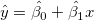 |
(8) |
|---|
残差 は次のように定義されます。
は次のように定義されます。
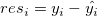 |
(9) |
|---|
式(2)は残差平方和を最小化します

|
(10) |
|---|
最小二乗推定  と
と
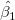
は、との推定に使います。
上記のセクションでは、誤差に定数分散があると仮定しています。しかし、実験値をフィッティングする場合、（計測器の確度と精度に影響を及ぼす）機器誤差を考慮する必要があります。したがって、誤差の定数分散推定は、棄却されます。そして、を非定数分散の正規分布であると推定する必要があります。また、誤差は、 のようになり、フィッティングで重みとして使用することができます。重みは、次のように定義されます。
のようになり、フィッティングで重みとして使用することができます。重みは、次のように定義されます。

|
|---|
フィッティングモデルは、次の式になります。
![\sum_{i=1}^n w_i (y_i-\hat y_i)^2=\sum_{i=1}^n w_i [y_i-(\hat{\beta _0}+\hat{\beta _1}x_i)]^2](../images/Linear_Regression_Results/math-b91af30efe2f541053551a9080cdf9de.png "\sum_{i=1}^n w_i (y_i-\hat y_i)^2=\sum_{i=1}^n w_i [y_i-(\hat{\beta _0}+\hat{\beta _1}x_i)]^2")
|
(11) |
|---|
重み因子 は、3つの式によって与えられます。
は、3つの式によって与えられます。
エラーバーは、計算では重みとして取り扱われません。
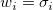 |
(12) |
|---|
機械的重みとして、値は、機械的誤差に反比例します。大きな誤差がある場合よりも正確であるため、小さな誤差の試行には、大きな重みがあります。
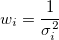 |
(13) |
|---|
| 重みとしての誤差は、ワークシートの「YError」として構築されています。 |
固定切片は、y切片を設定して、値を固定します。また、 固定切片のため、全ての自由度は、n*=n-1となります。
sqrt(補正カイ二乗値)のスケールエラーは、重みを付けたフィットで、使用することができます。このオプションは、フィット処理で出力されるパラメータの誤差だけに影響し、フィット処理やデータには影響しません。
デフォルトで、チェックが付き、は、 パラメータ誤差の計算を考慮しているか、 あるいは、は、誤差計算を考慮していません。
共分散行列を例にすると、sqrt(補正カイ二乗値)のスケールエラーは、以下のようになります。
=\sigma^2 (X^{\prime }X)^{-1}")
| |
|---|---|

|
(14) |
sqrt(補正カイ二乗値)のスケールエラーでは無い場合は、次の通りです。
=(X'X)^{-1}\,\!")
|
(15) |
|---|
重み付けフィットには、^{-1}\,\!") の代わりに、
の代わりに、
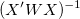
を使います。線形フィットを実行すると、分析レポートシートに計算された値が出力されます。 パラメータ表には、モデルの傾きと切片（括弧内の数字は生成された値を示す）が表示されます。
式(3)と(4)を参照してください。
各パラメータにおいて、標準誤差は以下のように得られます。

|
(16) |
|---|
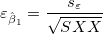 |
(17) |
|---|
ここで、標本の分散  （または、誤差平均二乗）は、 次のように推定できます。
（または、誤差平均二乗）は、 次のように推定できます。
^2}{n^{*}-1}")
|
(18) |
|---|
そして、RSSは残差平方和(または平方誤差和SSE)のことで、実際には、各データポイントからフィット曲線までの垂直方向での差の平方和となります。これは次式のように計算されます。
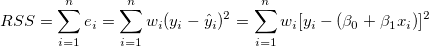 |
(19) |
|---|
Note : について、モデルに切片が含まれている場合、 について、モデルに切片が含まれている場合、 で、それ以外は で、それ以外は  です。 です。
|
回帰の前提から次式があります。
 および および 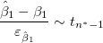 |
(20) |
|---|
フィッティングパラメータが0ではないことを調べるためにt 検定を使うことができます。これは、  (真ならば、フィット直線が原点を通る) または
(真ならば、フィット直線が原点を通る) または  であるかどうかを検定します。t 検定の仮説検定は次のようになります。
であるかどうかを検定します。t 検定の仮説検定は次のようになります。
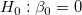
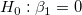
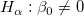
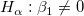
The t-values can be computed by:
 および および 
|
(21) |
|---|
計算されたt 値を使って、対応する帰無仮説を棄却するかどうかを決めることができます。通常、与えられた有意水準  に対して、
に対して、 のときに
のときに  を棄却できます。また、 p値または有意水準が t検定と一緒に出力されます。p値が より小さい場合、帰無仮説 を棄却することができます。
を棄却できます。また、 p値または有意水準が t検定と一緒に出力されます。p値が より小さい場合、帰無仮説 を棄却することができます。
上記のt 検定の が真である確率
)\,\!")
|
(22) |
|---|
ここでtcdf(t, df) は、自由度 df を持つスチューデントt分布の下側の確率を計算します。
t値から各パラメータの
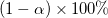
信頼区間を次式で計算することができます。}\varepsilon _{\hat \beta _j}\leq \hat \beta _j\leq \hat \beta _j+t_{(\frac \alpha 2,n^{*}-k)}\varepsilon _{\hat \beta _j}")
|
(23) |
|---|
ここで と
と は、それぞれ上側信頼区間と下側信頼区間のことです。
は、それぞれ上側信頼区間と下側信頼区間のことです。
信頼区間の半値幅は以下の通りです。

|
(24) |
|---|
ここでUCLとLCLは、それぞれ上側信頼区間と下側信頼区間です。
重要な線形フィットの統計値は統計表に表示されます（括弧内の数字は生成された値を示す）。
誤差の自由度。詳細は ANOVA表を参照してください。
残差平方和。式(19)を参照。
式(14)を参照。
線形回帰の質は、決定係数(COD)または  で計測でき、次の式で計算できます。
で計測でき、次の式で計算できます。

|
(25) |
|---|---|
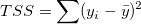 |
ここで、 TSS は合計平方和、RSSは残差平方和です。 の値は、0から1の間にあります。一般的に、1に近いほど、XとYの関係は非常に強いと見なされ、回帰モデルに高い信頼性を持たせることができます。
補正 値も次の式で計算できます。

|
(26) |
|---|
R 値は の平方根に等しくなります。

|
(27) |
|---|
単純な線形回帰では、xとyの相関係数は、 r で表され、次の式に等しくなります。
  が正の場合 が正の場合
|
(28) |
|---|---|
 が負の場合 が負の場合
|
誤差の平均平方の平方根または、残差標準偏差は、次式に等しくなります。

|
(29) |
|---|
Equals to square root of RSS:

|
(30) |
|---|
線形フィットのANOVA表は
| DF | 平方和 | 平均平方 | F値 | Prob > F | |
|---|---|---|---|---|---|
| モデル | 1 | 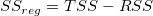 |
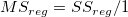 |

|
p-値 |
| 誤差 | n* - 1 | RSS | MSE = RSS / (n* - 1) | ||
| 合計 | n* | TSS |
Note: 切片がモデルに含まれてる場合、 n*=n-1です。それ以外は、 n*=n で平方和の合計は未補正となります。勾配が固定の場合、  = 0です。 = 0です。
|
ここで、平方和の合計TSSは、
^2") (補正) (補正)
|
(31) |
|---|---|
 (未補正) (未補正)
|
F値で、フィットモデルがモデル「y=一定」と、有意に異なるかどうかを検定します。
p値、または、有意水準は、F検定と一緒に出力されます。p値が、よりも小さい場合、フィットモデルはモデル「y=一定」と有意に異なります。
ある値に切片を固定している場合、F検定のp値には意味が無く、切片一定としない線形回帰とは異なります。
不適合度を実行するには、連結フィットモードが選択されている場合に、少なくともX値がデータセット内や複数データセット内で反復できるように、反復観測、つまり、「複製データ」が必要になります。
複製データでフィットに使われている表記：
 は、データセット中のi番目のx値における、j番目の観測値です。 は、データセット中のi番目のx値における、j番目の観測値です。 |
 は、i番目のx値における全てのy値の平均です。 は、i番目のx値における全てのy値の平均です。 |
 は、i番目のx値における、j番目の観測値の予測反応です。 は、i番目のx値における、j番目の観測値の予測反応です。 |
残差平方和は、次の通りです。
^2")
|
|---|
^2")
|
^2")
|
非線形フィッティングの適合度検定表：
| DF | 平方和 | 平均平方 | F値 | Prob > F | |
|---|---|---|---|---|---|
| 不適合度 | c-2 | LFSS | MSLF = LFSS / (c - 2) | MSLF / MSPE | p-値 |
| 純誤差 | n - c | PESS | MSPE = PESS / (n - c) | ||
| 誤差 | n*-1 | RSS |
| Note: 切片がモデルに含まれてる場合、 n*=n-1 です。それ以外は、 n*=n で平方和の合計は未補正となります。勾配が固定の場合、 cは、明確なx値の数を示します。切片が固定である場合、適合度検定のDFは、c-1になります。 |
線形回帰の共分散行列は次のように計算されます。
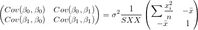 |
(32) |
|---|
2つのパラメータ間の相関は、
=\frac{Cov(\beta _i,\beta _j)}{\sqrt{Cov(\beta _i,\beta _i)}\sqrt{Cov(\beta _j,\beta _j)}}")
|
(33) |
|---|
外れ値は、スチューデン残差グラフ内の絶対値が2より大きいポイントです。
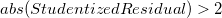
スチューデント化残差は、残差変換による外れ値の除去で説明されています。
 は、標準残差から成っています。
は、標準残差から成っています。

|
(34) |
|---|
内部スチューデント化残差とも呼ばれます。

|
(35) |
|---|
外部スチューデント化残差とも呼ばれます。

|
(36) |
|---|
スチューデント化とスチューデント化削除の残差の数式で、 は、行列
は、行列 のi 番目の対角要素です。
のi 番目の対角要素です。
^{-1}X^{\prime }")
|
(37) |
|---|
 は、分散がi番目を除いた全てのポイントに基づいて計算されていることを意味します。
は、分散がi番目を除いた全てのポイントに基づいて計算されていることを意味します。
特定の値  の場合、
の場合、 における
における  の平均値の信頼区間
の平均値の信頼区間 \%") は
は
}s_\varepsilon \sqrt{\frac 1n+\frac{(x_p-\bar x)^2}{SXX}}")
|
(38) |
|---|
における の平均値の推定区間 は
}s_\varepsilon \sqrt{1+\frac 1n+\frac{(x_p-\bar x)^2}{SXX}}")
|
(39) |
|---|
一対の変数 (X, Y) が2変量の正規分布に従うと仮定すると、信頼楕円を使って、2つの変数間の相関を調べることができます。信頼楕円は( ,
,  ) を中心に作られ、長軸 a と短軸 b は、以下のようになります。
) を中心に作られ、長軸 a と短軸 b は、以下のようになります。
+4r^2\sigma _x^2\sigma _y^2}}2}")
| |
|---|---|
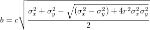 |
(40) |
指定した有意水準 \,\!") に対して
に対して
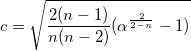 |
(41) |
|---|
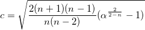 |
(42) |
|---|

|
(43) |
|---|
作図するには、標準、正規化、スチューデント化、スチューデント化残差から1つの残差タイプを選択します。
残差散布図 vs.独立変数
vs.独立変数 では、それぞれのプロットは別のグラフに配置されます。
では、それぞれのプロットは別のグラフに配置されます。
残差散布図 vs. フィット結果
vs. 順番
残差のヒストグラムプロット
残差 vs. ラグ残差}")
残差の正規確率プロットは、分散が正規分布しているかどうかを調べるのに使用します。結果のプロットはおおよそ線形で、誤差範囲は正規分布していると仮定することができます。プロットはパーセンタイル対順序化された残差をベースにしており、パーセンタイルは次のように仮定されます。
}{(n+\frac{1}{4})}")
ここで、n はデータセットの合計数で、i はi 番目のデータです。なお、正規確率プロットとQ-Qプロットについてをご覧ください。